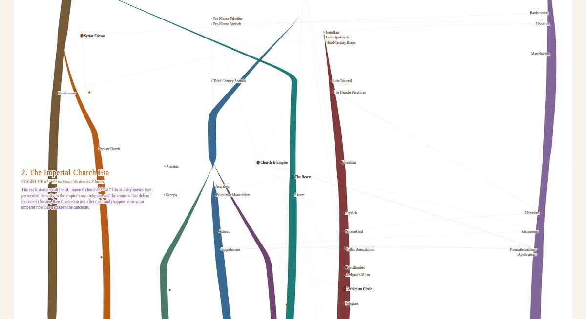
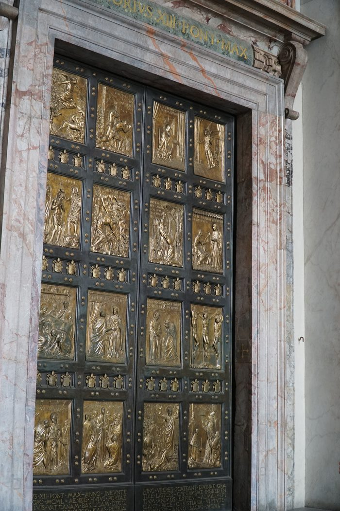

Explore hundreds of Christian traditions and stories across two thousand years.Then talk to representatives from a growing number of those traditions, each built from its own historical records.
Build a Table
Three Voices, One Conversation
Seat up to three traditions from across the church's history. Put a question to the table and hear each one answer and discuss. You will hear where they agree, and where they part ways.
Build the table →
Church Family Tree
Hundreds of Traditions, One Family Tree
Click any tradition on the map to read its story and the sources behind it. Many traditions also open into documented stories from inside their own history. The book icons mark true stories that sit between the traditions and never became movements of their own. Some traditions are fully built, with a voice you can talk to. More will be added over time.
Open Church Family Tree →Conversation with One
One Voice, One Conversation
Choose a representative of a Christian tradition below. Each one is built from that tradition's own writings, so you can ask what they believed and how they followed Jesus.
Who would you like to talk with?
The voices could not load just now. You can still browse every tradition on the Church Family Tree and start a conversation from there.
Keep the Door Open
We believe the Church's real story helps people know Jesus more fully. Your gift keeps the door open so others can hear of His faithfulness to His people, and their journey of following Him.
Every gift helps pay the cost of running these conversations, so more people can sit down at the table.

The Unfolding Story
For two thousand years, people have followed Jesus across vastly different worlds and cultures.
Synthesized voice — not a recording.
They gathered in modest homes and workshops, navigating the suspicion of their neighbors and the pressure of hostile rulers. They followed Him into mountain monasteries and remote deserts, along ancient trade routes across Asia, and into the cathedrals and university halls of Europe. They stood at the stake in Reformation squares, sang through forced labor in colonial fields, knelt in Latin American village chapels, and gathered inside modern churches across the world.
Like the ancient story of Israel, the story of the Church calls for honesty. Its people did not march in lockstep, and they did not get everything right. They wrestled with political power and argued over hard questions. They fractured, and they failed often. At every turn, their story proves that humanity cannot fix itself. Yet God never worked from a safe distance, nor did He wait for people to become perfect before meeting them. He stepped directly into their everyday lives, in their own languages and cultures. By His Spirit He guided them and shaped their human gifts for His purposes. He used their human hands to heal the fractured and restore His creation.
Through all those scattered eras and divergent paths, each community discovered its own view of who Jesus is and how to follow Him. You are invited to explore these stories. Trace forgotten routes across a living atlas and uncover the stories that shaped the Church. Then pull up a chair with representative voices from across these traditions. You can hear where they stand in deep agreement and listen as they wrestle with where they see things differently. Along the way, you may discover where your own story connects with theirs.
These are AI voices built only from the surviving writings of each tradition. They are not real people, and they do not speak for any church today.